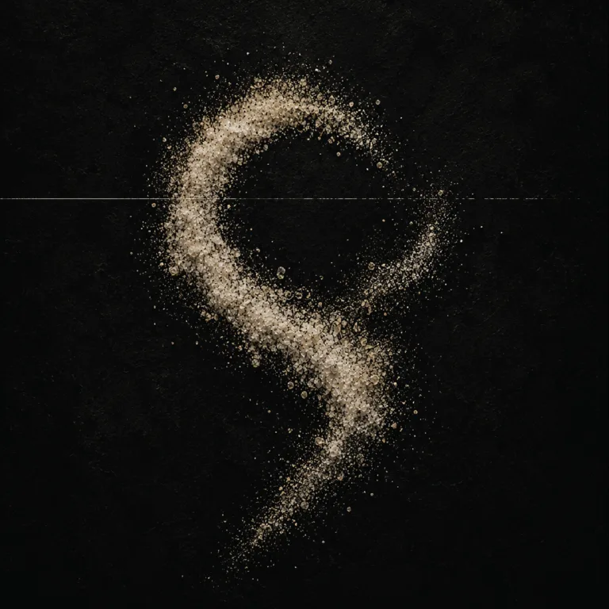
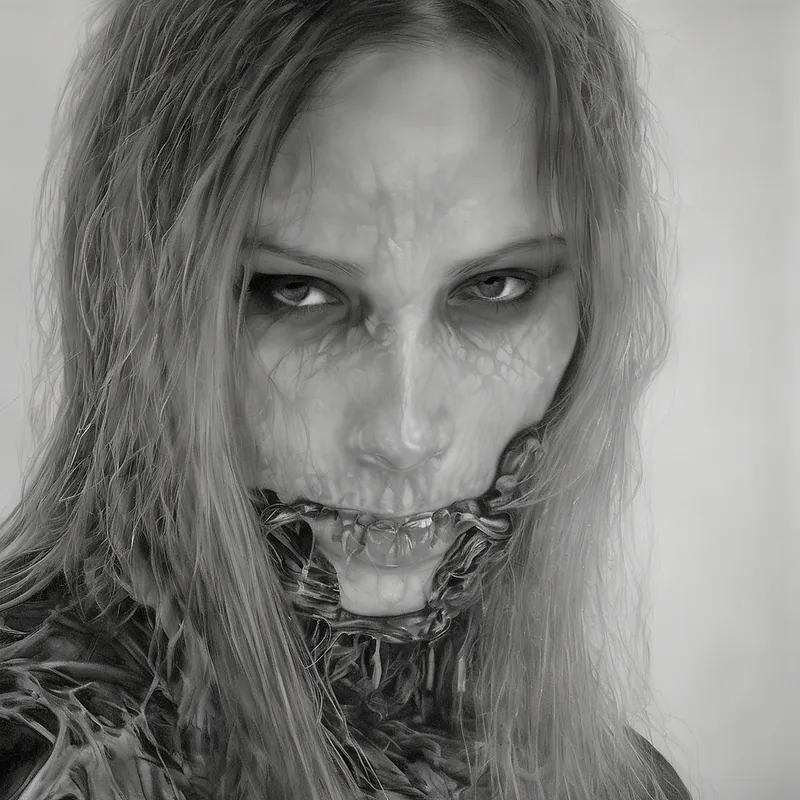
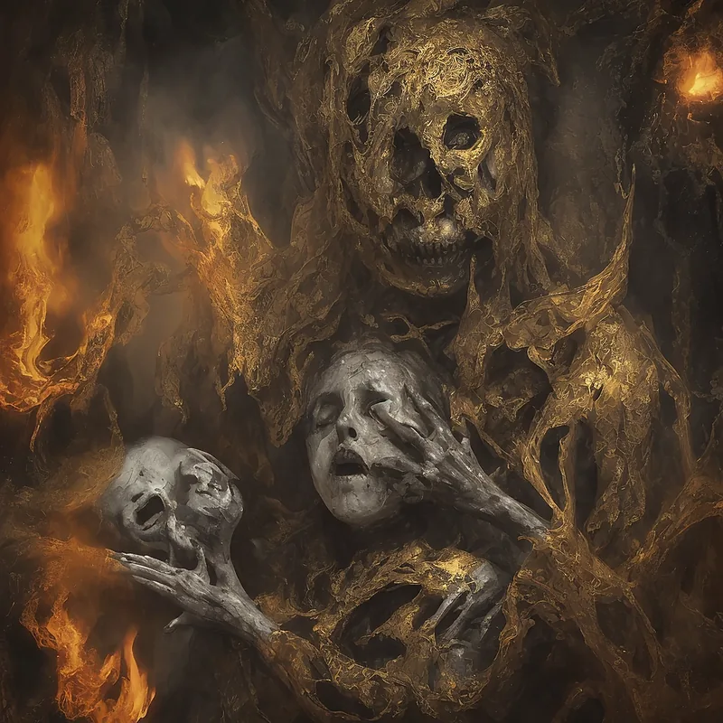
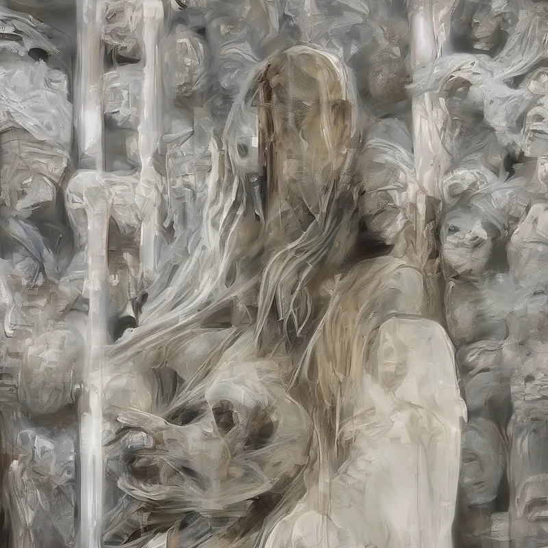
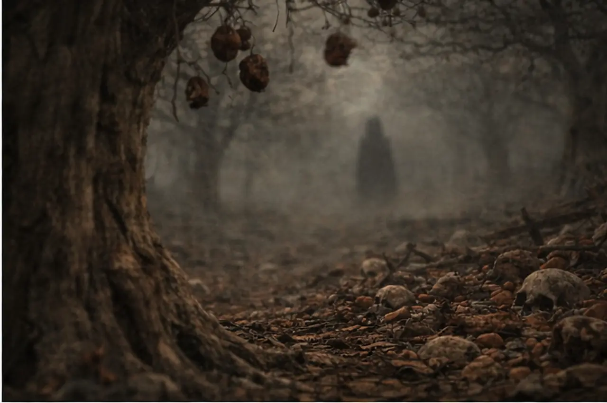

Ghost Orgy by Jack Dyer
Electronic Press Kit
GhostOrgy
Phoenix-based experimental post-hardcore by Jack Dyer. Art-damaged hardcore, literary heavy music, damaged texture, and a horror-mythic world built around Nine Sisters and one Orchard.
Fast ID
Quick Facts
The short assignment answer: Ghost Orgy belongs first in experimental post-hardcore and art-damaged hardcore, with the wider occult world functioning as the record's architecture rather than decoration.
Phoenix, Arizona
Experimental post-hardcore / art-damaged hardcore / literary heavy music / die-fi
Press, interviews, premieres, select licensing, commissions, and collaborations when the context fits the canon
Recommended If You Like
RIYL
This is the press lane: experimental post-hardcore for readers who understand volatile, literary, art-damaged heavy music.
Press Lane
Copy-Ready
Descriptions
Plain-language descriptions for listings, previews, reviews, local coverage, and quick editorial handoff.
25-word bio
Ghost Orgy is Phoenix-based experimental post-hardcore by Jack Dyer, turning art-damaged hardcore, literary heavy music, and die-fi ritual audio into a horror-mythic album world.
50-word bio
Ghost Orgy is a Phoenix-based experimental post-hardcore project by Jack Dyer. The sound sits near Refused, Give Up the Ghost, The Blood Brothers, early mewithoutYou, Modern Life Is War, and The Sound of Animals Fighting, then folds that pressure into horror-mythic world-building and damaged, die-fi texture.
100-word bio
Ghost Orgy is a Phoenix-based experimental post-hardcore project by Jack Dyer, built where art-damaged hardcore, literary heavy music, and horror-mythic world-building converge. The project centers on Salt, a volatile debut album released May 29, 2026, and expands into a larger canon of Nine Sisters, one Orchard, recovered artifacts, visual studies, and damaged ritual audio. For editors, the closest lane is experimental post-hardcore: Refused, Give Up the Ghost, The Blood Brothers, early mewithoutYou, Modern Life Is War, and The Sound of Animals Fighting. Select licensing, commissions, and collaborations are considered for horror cinema, games, installations, title sequences, ritual visuals, and dark narrative media when the context fits the work rather than reducing it to atmosphere.
Album sentence
Salt is Ghost Orgy's debut album, released May 29, 2026: a Phoenix experimental post-hardcore record that turns art-damaged hardcore into a horror-mythic album world.
Story Hooks
Press Angles
The useful version for editors: what it is, why readers might care, and where the larger world enters the music.
Local Story
Phoenix heavy music with an unusually built world
A Phoenix project turning art-damaged hardcore into a visual, literary, and horror-mythic album universe.
Music Story
Post-hardcore pushed into narrative architecture
Volatile heavy music where texture, noise, voice, and lore are part of the same pressure system.
Licensing & Collaboration
A body of work that can enter darker media without becoming decoration
Ghost Orgy is available for select licensing, commissions, and collaborations when the scene needs presence, pressure, and mythology rather than background mood.
Current Signal
Salt and Suffering
Two albums. Two wounds. One signal the Orchard let through. Salt is the current release; Suffering remains unscheduled.

I / Salt
Salt
The preservation wound. What is kept in the body so it remembers what entered it.

II / Suffering
Suffering
The endurance wound. What the body does once the signal will not leave the room.
World
Nine Sisters. One Orchard.
The art-world layer remains intact: nine bodies grown around nine failures of the self. Limbo, Lust, Gluttony, Greed, Wrath, Heresy, Violence, Fraud, and Treachery are not costumes; they are the record's pressure points.
Canon
Not a band page. A system.
Ghost Orgy treats songs, visuals, recovered artifacts, and the Nine Sisters as one connected body of work.
Sound
Close-mic dread and sub pressure
Heavy modulation, damaged fidelity, ritual voice, and lossless detail kept deliberately rough at the edges.
Entry
The main site opens the larger world
Send editors here first for assignment clarity, then to the main site for lore, artifacts, sisters, and the full Orchard.
Public Links
Listen / Follow
Press kit first, world second. Public channels are available for listening, social verification, and follow-up.
Visual Identity
Concept Studies
Existing public artwork for the project's horror-mythic visual language. Email for press-ready assets, credits, or collaboration context.



Press Images
Project Images
Usable public images for editorial layouts, previews, posts, and reference decks.



Assets
Press Downloads
Usable files for listings, previews, and editorial prep. Email for additional crops, credits, or additional formats.
One-sheet PDF
Single-page editor one-sheet for Ghost Orgy and Salt.
Square cover art
High-resolution Salt album cover, 3000 x 3000 JPG.
{kind=link}
Press image
Horizontal Ghost Orgy orchard/watcher image for web editorial use.
{kind=link}
Vertical image
Portrait-oriented sister image for stories, posters, and vertical layouts.
Logo / sigil
White Ghost Orgy sigil mark on transparent PNG.
{kind=link}
Wordmark
Simple Ghost Orgy wordmark SVG for editorial use.
{kind=link}
Short bio
Short plain-text bio for listings and quick previews.
Long bio
Long plain-text bio for features, previews, and backgrounders.
All bio text
Combined 25-word, 50-word, 100-word, and album-description text file.
More assets
Request alternate crops, credits, project context, or additional formats.
Contact
Reviews. Features. Premieres. Interviews. Licensing.
Available for interviews, reviews, premieres, local features, playlist consideration, licensing conversations, commissions, and collaborations. Film, games, installations, trailers, and experimental media are considered when the project can carry the weight of the work.